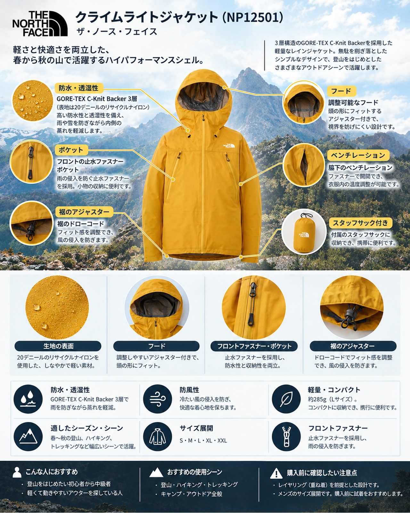

秋が深まり、北アルプスなど3,000m級の稜線では冷え込みが強まる時期になりました。晴れていても稜線の風は冷たく、天気も変わりやすい季節です。そんな時期にザックへ1枚入れておきたいのが、軽くて防水・防風の効くシェルです。今回は、ザ・ノース・フェイスの「クライムライトジャケット（メンズ）」を紹介します。
この記事で紹介する商品
基本スペック
| 項目 | 内容 |
|---|---|
| 品番 | NP12501 |
| 素材 | GORE-TEX C-Knit Backer 3層（表地は20デニールのリサイクルナイロン） |
| 重量 | 約285g（Lサイズ） |
| サイズ | S・M・L・XL・XXL |
| 価格 | 50,600円（税込。2026年10月12日時点の公式サイトの表示） |
特徴とメリット
メーカーの説明によると、急な天候の変化に対応する3層構造のシェルで、軽くて柔らかいePEメンブレンを使い、軽さと強度のバランスを重視したモデルです。
前のモデル（NP11503）を試した山岳メディアのレビューでは、ハードシェルにしてはゴワつきが少なく動きやすいこと、本降りの雨でも防水性を実感できたことが共通して評価されていました。今のモデルは素材や作りが新しくなっているため、着心地は店頭で確かめるのがおすすめです。
- 約285g（Lサイズ）と軽く、付属のスタッフサックでコンパクトに収納できる
- 両脇下のベンチレーションで、歩いて暑くなったときに衣服内の熱を逃がせる
- フロントとポケットは止水ファスナー。ポケットはザックのハーネスと干渉しにくい位置にある
- ヘルメットの上からかぶれるフードで、片手で調整できるアジャスター付き
- パックを背負ったままでも腕を上げやすい設計で、風によるばたつきを抑えるシルエット
デメリット・注意点
- 価格は50,600円（税込）で、レインジャケットとしては高めです
- 保温材は入っていないシェルなので、冷え込む稜線では中間着と組み合わせる必要があります
- 前のモデルのレビューでは、着丈がやや短めという指摘がありました。厚手の中間着を着る人は、サイズを試着して選ぶと安心です
向いている人・向いていない人
◎向いている人
- 日帰りから小屋泊まりの山行で、雨具と防風着を軽い1枚にまとめたい人です。稜線を長く歩く縦走や、天気の変わりやすい秋の高山にも合います。
△向いていない人
- 価格を抑えたい人や、街での普段使いが中心の人です。
まとめ
クライムライトジャケットは、約285g（Lサイズ）のGORE-TEX 3層シェルです。軽さと防水・防風性能を両立していて、天気の読みにくい秋の山で頼れる1枚です。価格は高めですが、レインウェアと防風着を1枚で兼ねたい人には検討する価値があります。
この記事で紹介した商品
価格・重量・在庫は各ブランド公式サイトの記載（確認日つき）にもとづきます。商品を押すと、購入先を選べます。
PR広告・免責について
この記事にはアフィリエイト広告が含まれます。リンク先での購入により、当サイトが報酬を受け取る場合があります。山行の前には、最新の気象とルートの状況を必ずご確認ください。